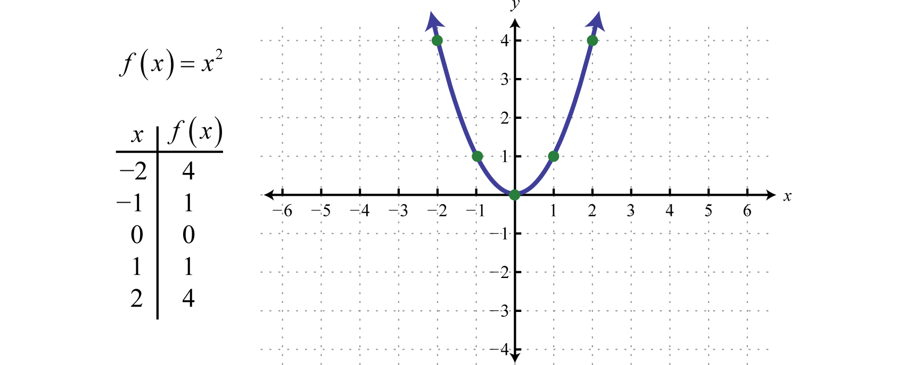
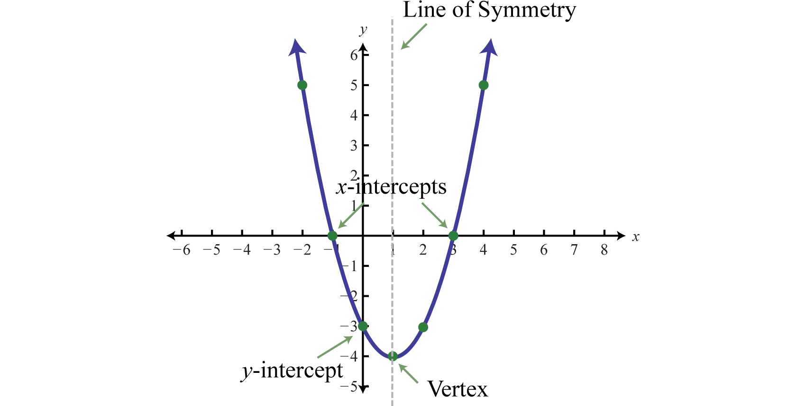
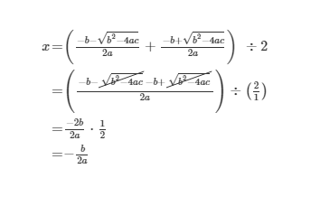

MATHEMATICS 9
Teacher: Sir Reavidor A. Abarete
QUADRATIC FUNCTIONS
A quadratic function is a polynomial function of degree 2 which can be written in the general form, f(x)=ax2+bx+c. Here a, b and c represent real numbers where a≠0. The squaring function f(x)=x2 is a quadratic function whose graph follows.
This general curved shape is called a parabola and is shared by the graphs of all quadratic functions. The domain of this function consists of the set of all real numbers (−∞,∞) and the range consists of the set of nonnegative numbers (0,∞).
When graphing parabolas, we want to include certain special points in the graph. The y-intercept is the point where the graph intersects the y-axis. The x-intercepts are the points where the graph intersects the x-axis. The vertex is the point that defines the minimum or maximum of the graph. Lastly, the line of symmetry (also called the axis of symmetry) is the vertical line through the vertex, about which the parabola is symmetric.
For any parabola, we will find the vertex and y-intercept. In addition, if the x-intercepts exist, then we will want to determine those as well. Guessing at the x-values of these special points is not practical; therefore, we will develop techniques that will facilitate finding them.
Given a quadratic function f(x)=ax2+bx+c, find the y-intercept by evaluating the function where x=0. In general, f(0)=a(0)2+b(0)+c=c, and we have
Next, recall that the x-intercepts, if they exist, can be found by setting f(x)=0. Doing this, we have a2+bx+c=0, which has general solutions given by the quadratic formula. Therefore, the x-intercepts have this general form:

Using the fact that a parabola is symmetric, we can determine the vertical line of symmetry using the x-intercepts. To do this, we find the x-value midway between the x-intercepts by taking an average as follows:

Therefore, the line of symmetry is the vertical line x=-b/2a. We can use the line of symmetry to find the the vertex.
